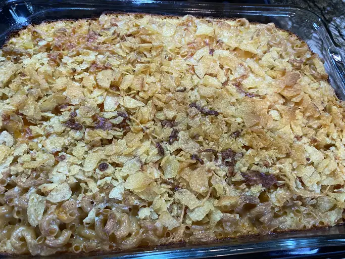

Old School Mac and Cheese

Description
This is a completely unpretentious, down-home macaroni and cheese recipe just like my grandma and mom always made. A simple white sauce where you add cheese and a few other flavors with macaroni and a potato chip crust.
Ingredients
- 1 3/4 pounds whole-wheat macaroni
- 3/4 cup butter
- 1 ¾ pounds whole-wheat macaroni
- ¾ cup butter
- ¾ cup all-purpose flour
- 6 cups milk, divided
- 1 tablespoon Worcestershire sauce
- 1 teaspoon mustard powder
- 1 teaspoon onion powder
- 1 teaspoon cayenne pepper
- salt and ground black pepper to taste
- 1 (8 ounce) package shredded Cheddar cheese, divided
- 3 (8 ounce) packages shredded American cheese
- 1 (8 ounce) bag potato chips (such as Lay's®), crushed
- 1 cup shredded Cheddar cheese
- ⅓ cup grated Parmesan cheese
- butter-flavored cooking spray